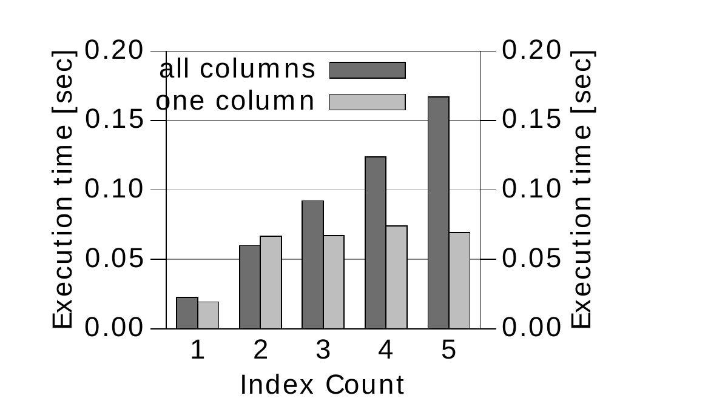

Chương 8
Modifying Data
Cho đến nay, chúng ta mới chỉ bàn về query performance, nhưng SQL không chỉ có query. SQL còn hỗ trợ cả data manipulation. Các command tương ứng — insert, delete và update — hợp thành cái gọi là “data manipulation language” (DML), một phần của SQL standard. Phần lớn, index ảnh hưởng tiêu cực đến performance của các command này.
Index thuần túy là redundancy. Index chỉ chứa những dữ liệu cũng đã được lưu trong table. Khi thực hiện write operation, database phải giữ cho các phần redundancy này nhất quán. Cụ thể, insert, delete và update không chỉ tác động đến table mà còn đến cả các index đang giữ bản sao của dữ liệu bị ảnh hưởng.
Insert#
Số lượng index trên một table là yếu tố chi phối mạnh nhất đối với insert performance. Table càng có nhiều index thì execution càng chậm. Insert statement là operation duy nhất không thể trực tiếp hưởng lợi từ indexing vì nó không có where clause.
Thêm một row mới vào table gồm nhiều bước. Trước tiên, database phải tìm chỗ để lưu row. Với một heap table thông thường — vốn không có thứ tự row cụ thể nào — database có thể lấy bất kỳ table block nào còn đủ free space. Đây là một quá trình rất đơn giản và nhanh, phần lớn diễn ra trong main memory. Sau đó, database chỉ cần thêm entry mới vào data block tương ứng.
Nếu table có index, database phải bảo đảm entry mới cũng tìm được thông qua các index đó. Vì vậy, database phải thêm entry mới vào từng index một trên table đó. Do đó, số lượng index đóng vai trò hệ số nhân cho cost của một insert statement.
Hơn nữa, thêm một entry vào index tốn kém hơn nhiều so với chèn entry vào heap structure, vì database phải giữ thứ tự của index và độ cân bằng của tree. Tức là entry mới không thể được ghi vào một block bất kỳ — entry đó thuộc về một leaf node cụ thể. Dù database dùng chính index tree để tìm đúng leaf node, database vẫn phải đọc vài index block cho bước tree traversal.
Sau khi xác định được đúng leaf node, database kiểm tra xem node này còn đủ free space hay không. Nếu không, database sẽ split leaf node và chia các entry giữa node cũ và một node mới. Quá trình này cũng ảnh hưởng đến các tham chiếu trong branch node tương ứng, vì các tham chiếu đó cũng phải được nhân đôi. Dĩ nhiên, branch node cũng có thể hết chỗ, nên có thể cũng phải bị split. Trong trường hợp xấu nhất, database phải split tất cả node lên tới tận root node. Đây là trường hợp duy nhất khiến tree có thêm một layer và tăng depth.
Suy cho cùng, index maintenance là phần tốn kém nhất của insert operation. Điều này cũng thấy rõ trong Hình 8.1, “Insert Performance by Number of Indexes”: nếu table không có index nào, execution time gần như không nhìn thấy được. Tuy vậy, chỉ cần thêm một index là đủ làm execution time tăng gấp một trăm lần. Mỗi index thêm vào lại làm execution chậm hơn nữa.

Để optimize insert performance, điều rất quan trọng là giữ số lượng index ở mức nhỏ.
Nếu chỉ xét insert statement, tốt nhất là tránh hẳn index — cách này cho insert performance tốt hơn rất nhiều. Tuy nhiên, table không có index khá phi thực tế trong các application ngoài đời. Thông thường, bạn sẽ muốn đọc lại dữ liệu đã lưu, nên cần index để tăng tốc query. Ngay cả write-only log table cũng thường có primary key và một index tương ứng.
Dù vậy, performance khi không có index tốt đến mức tạm thời drop toàn bộ index trong lúc load lượng lớn dữ liệu có thể là hợp lý — với điều kiện trong thời gian đó không có SQL statement nào khác cần đến các index này. Cách này có thể giúp tăng tốc rất mạnh, như thấy trên biểu đồ, và thực tế là một cách làm phổ biến trong data warehouse.
Delete#
Không giống insert statement, delete statement có where clause, và clause này có thể dùng mọi cách đã mô tả trong Chapter 2, “The Where Clause”, để hưởng lợi trực tiếp từ index. Thực tế, delete statement hoạt động giống một select, theo sau là một bước bổ sung để xóa các row đã tìm được.
Bản thân việc xóa một row là quá trình tương tự như chèn một row mới — đặc biệt là phần gỡ các reference khỏi index và các thao tác giữ cho index tree cân bằng. Vì vậy, performance chart trong Figure 8.2 rất giống chart đã trình bày cho insert.

Về lý thuyết, ta sẽ kỳ vọng delete performance tốt nhất ở table không có index nào — giống như với insert. Tuy nhiên, nếu không có index, database phải đọc toàn bộ table để tìm các row cần xóa. Tức là xóa row thì sẽ nhanh, nhưng tìm row lại rất chậm. Vì vậy, trường hợp này không được thể hiện trong Figure 8.2.
Dù vậy, chạy delete statement mà không dùng index vẫn có thể hợp lý, cũng như chạy một select statement không dùng index có thể hợp lý nếu statement đó trả về phần lớn table.
Update#
Delete statement không có where clause là một ví dụ hiển nhiên về trường hợp database không thể dùng index, dù đây là trường hợp đặc biệt đã có SQL command riêng: truncate table. Command này có cùng effect với delete không có where, chỉ khác là nó xóa toàn bộ row trong một lần. Truncate table rất nhanh nhưng có hai side effect quan trọng: (1) nó thực hiện implicit commit (ngoại lệ: PostgreSQL); (2) nó không chạy trigger nào.
Update statement phải dời các index entry bị thay đổi sang vị trí mới để giữ thứ tự của index. Muốn vậy, database phải xóa entry cũ và thêm entry mới vào vị trí mới. Về cơ bản, response time bằng tổng response time của delete và insert statement tương ứng.
Cũng như insert và delete, update performance phụ thuộc vào số lượng index trên table. Điểm khác biệt duy nhất là update statement không nhất thiết tác động đến tất cả column, vì statement này thường chỉ sửa một vài column được chọn. Do đó, update statement không nhất thiết tác động đến tất cả index trên table, mà chỉ tác động đến những index chứa các column được cập nhật.

Figure 8.3 cho thấy response time của hai update statement: statement thứ nhất set tất cả column nên tác động đến tất cả index, còn statement thứ hai chỉ cập nhật một column nên chỉ tác động đến một index.
Statement update tất cả column cho thấy cùng pattern ta đã thấy ở các phần trước: response time tăng theo từng index được thêm vào. Còn response time của update statement chỉ tác động đến một index thì không tăng nhiều như vậy, vì statement này để nguyên phần lớn các index.
Để optimize update performance, bạn phải cẩn thận chỉ cập nhật những column đã thay đổi. Điều này hiển nhiên nếu bạn tự viết update statement. Tuy nhiên, ORM tool có thể tạo update statement set tất cả column ở mọi lần chạy. Chẳng hạn, Hibernate làm vậy khi tắt mode dynamic-update. Từ version 4.0, mode này được bật mặc định.
Khi dùng ORM tool, một thói quen tốt là thỉnh thoảng bật query logging trong môi trường development để kiểm tra các SQL statement được tạo ra. Tip có tiêu đề “Enabling SQL Logging” ở trang 95 có phần tổng quan ngắn về cách bật SQL logging trong một số ORM tool phổ biến.